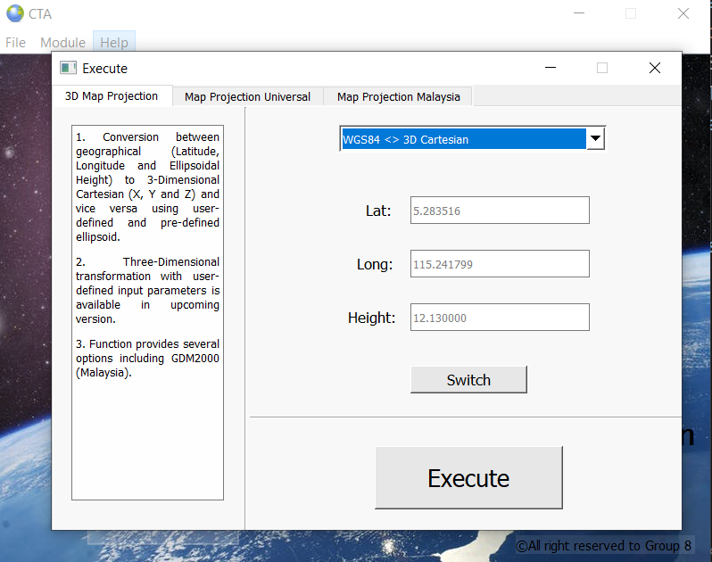
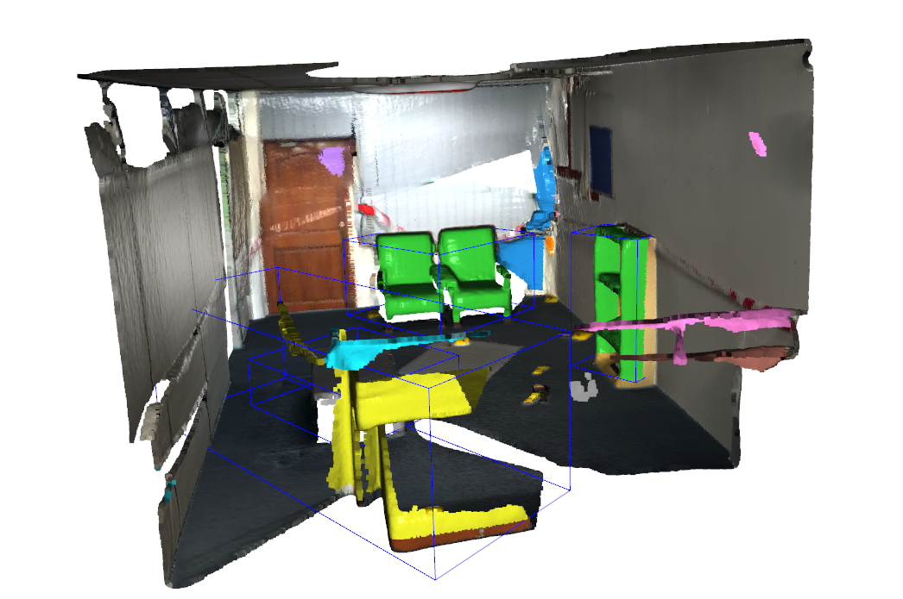
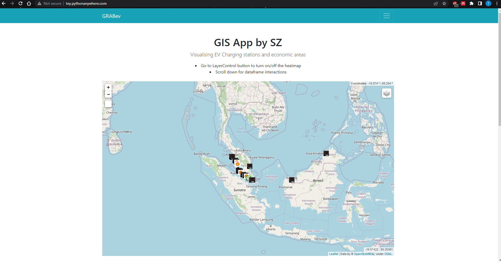
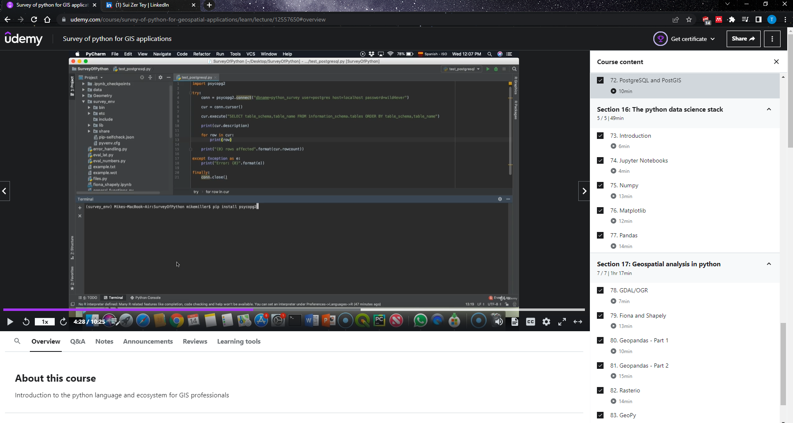
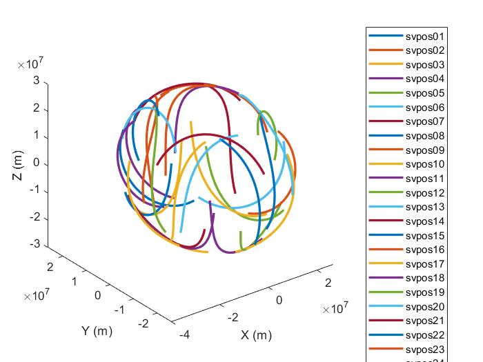
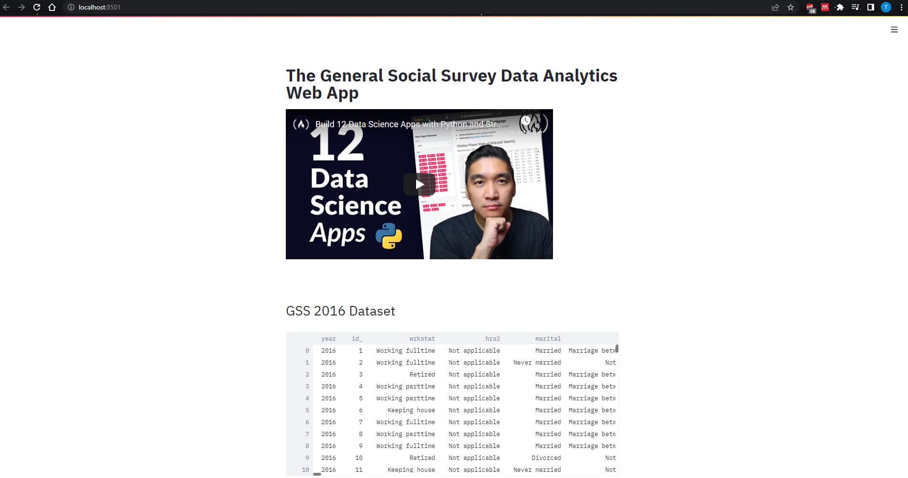
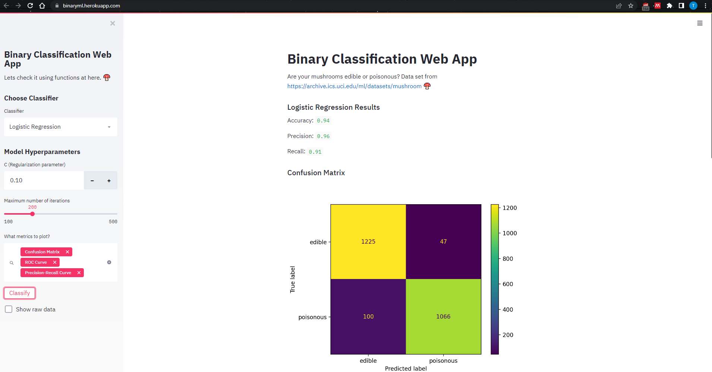
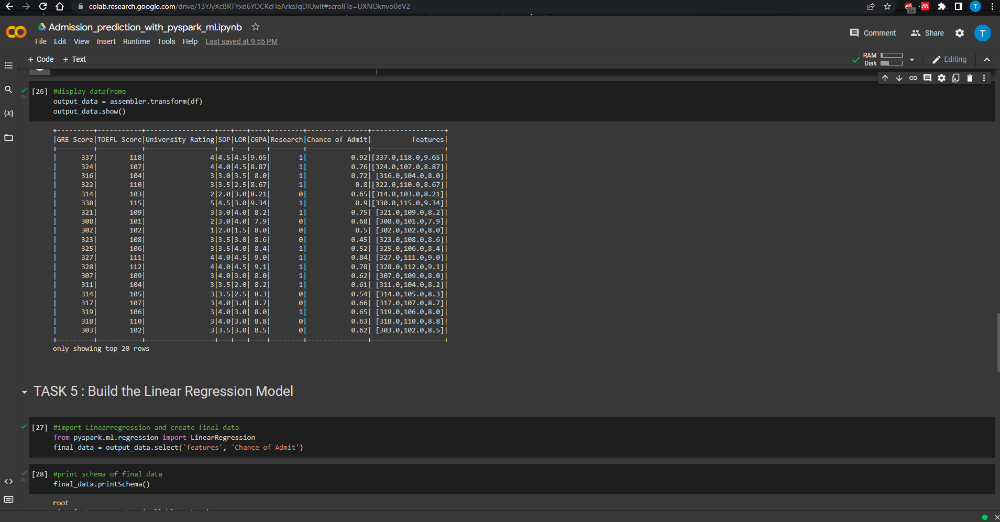
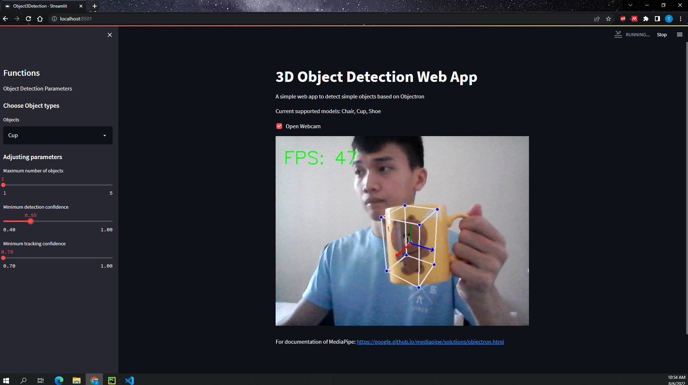

A little introduction to what I have learnt and implemented into programming.

Coordinate transformation module
Platform: Python
Function: Transform data between geographical coordinates and 3-Dimensional Cartesian coordinates.
Batch processings are available. Clean and funcitonal GUI help increase the interactions
Tools & Libraries: PyQt5, DigitalClock, pyproj, pandas, numpy, fnmatch
Try out the App

3D Point Cloud Model Clustering (unsupervised)
Platform: Python
Function: Using 3D point cloud data acquired from Apple Ipad Pro 2020 LiDAR sensor,
integrated with built in functions from Open3D such as segment_plane with RANSAC algorithm to perform
segmentations and plane detections for walls. Then, DBSCAN was applied to paint and differentiate detected 3D objects.
Tools & Libraries: Open3D, numpy, pandas, matplotlib
Learn more

WebGIS
Platform: Python
Function: Simulate an GIS Api
that shows shapefiles and also acquire all Mcd restaurants geolocation data in Malaysia to
be placed as markers on folium map.
Tools & Libraries: Django, folium, mysql, selenium, pandas, googlemaps, chromedriver, csv, GeoJSON
Check out website

Survey of Python in GIS applications
Platform: Python
Course information:
This course covers the basics of the python language, the python language,
and the core python packages for data analysis, especially of geospatial data.
The goal is to provide a broad introduction to the capabilities of python.
Tools & Libraries: Geopandas, GeoPy, Jupyter, Numpy, Pandas, Matplotlib, SQLite, PostgreSQL, JSON
Credential ID

Orbit computation of satellites' coordinates using MATLAB
Platform: MATLAB
Function:
Using RINEX data acquired from GPS receiver through satellites signals, created a few functions to extract the numerical things
in RINEX data, converted them into 3D Cartesian coordinates, then visualised their orbits in figure.
Tools & Libraries: MATLAB, RINEX data (*.o, *.n)
Learn more

Deploying a Python Data Analysis Web App on Heroku
Platform: Python
Course information:
This project is for anyone interested in breaking or transitioning into the data science field and hopes
to build a portfolio that stands out with unique projects. In this project I built and
deployed a python data analytics web application leveraging the General Social Survey data, which collects
information and records of behaviours, experiences and opinions of residents of the Us.
Tools & Libraries: Streamlit, pandas, PIL, plotly, csv
Credential ID

Build a Machine Learning Web App with Streamlit and Python
Platform: Python
Course information:
Using Python and Streamlit to build beautiful and interactive ML web apps with zero web development experience.
It allow load, explore, visualize and interact with data, and generate dashboards. This web application will allows users
to choose what classification algorithm they want to use and let them interactively set hyper-parameter values
Tools & Libraries: Streamlit, pandas, numpy, matplotlib, scikit-learn
Credential ID

Graduate Admission Prediction with Pyspark ML
Platform: Google Colab Python Notebook
Course information:
Using a Simple Linear Regression Machine Learning Algorithm from the Pyspark Machine learning library to predict the
chances of getting admission. Learn how to build a linear regression model using Pyspark ML to predict students' admission at the university.
This course used the graduate admission 2 data set from Kaggle.
Tools & Libraries: Pyspark
Credential ID

3D Object Detection Web App Based on Objectron MediaPipe
Platform: Python
Function:
Using the post trained model from Objectron integrated in MediaPipe library, a simple 3D object detection web app was built on Streamlit
with the aid of OpenCV to acquire 2D images through webcam. With Streamlit interfaces, users can adjust parameters for their needs.
Tools & Libraries: OpenCV, Streamlit, MediaPipe
Code repo

Raster Data Analysis using R Studio
Platform: R Studio
Function:
With libraries and simple mathematical functions available in R, extraction of Canopy Height were performed and plotted outputs. Besides,
local operations (Unary Operations, Binary Operations), Focal Operations, Zonal Operations and also Global Operations were also carried out to
target rasters.
Tools & Libraries: tmap, raster, reshape, ggplot2, sp
Learn more